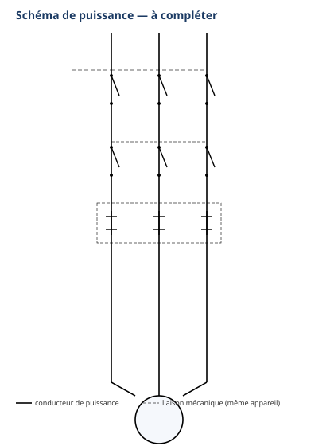

Thème / DomaineBrasage fort HP et électricité industrielle
Module atelier S5-E2 · 4 h × 2 passagesSchémas de commande industriels
SéquenceS5 · semaines 16-17
Nom________________
Prénom________________
Date (passage 1 / passage 2)_______ / _______
Positionnement01234
Mise en situation professionnelle
Ordre d'intervention n° OI-S5-4 : le commerce alimentaire de proximité poursuit l'équipement électrique de
son arrière-boutique, où sera installée une chambre froide. En S5-E1 (ordre OI-S5-3), vous avez déjà
câblé le départ moteur du groupe : contacteur et relais thermique vus ou en cours de découverte cette
même semaine. Cela ne suffit pas : il manque la commande, c'est-à-dire ce qui permet à l'exploitant de
démarrer et d'arrêter le groupe en toute sécurité. Passage 1 (semaine 16) : en classe puzzle, votre
binôme devient expert d'un seul bloc du schéma de commande, l'explique aux autres, puis toute la classe
câble collectivement l'armoire complète. Passage 2 (semaine 17) : sans le puzzle, vous transposez
seul(e) la méthode apprise à une variante.
Tâches
T10 Repérer, raccorder, assembler les réseaux fluidiques, aérauliques et électriques T11 Contrôler les circuits hors fonctionnement T12 Respecter les consignes de sécurité et protéger la zone de travail
Savoirs
S2.2 Lecture de plan AUGMENTÉ · S5.6 Réseaux, matériels électriques AUGMENTÉ Prérequis : S2.2 (S3-E2), S5.6 (S5-E1)
Savoir-être
Sécurité électrique sans rappel · rigueur du câblage collectif · coopération du puzzle (expliquer, écouter) · honnêteté du contrôle
Compétences (≤ 4)
ConfortementC3.6 Câbler, repérer, connecter les liaisons électriques et électroniques cible : vers Maîtrise ConfortementC3.2 Identifier sur site les réseaux d'alimentation
Ce qui change depuis S5-E1 — En S5-E1, vous avez manipulé un contacteur
isolé et câblé un départ moteur simple, avec l'aide constante du professeur. Aujourd'hui, vous découvrez un
schéma complet qui coordonne plusieurs éléments : un bouton marche, un bouton arrêt, un auto-maintien
(le contacteur « reste alimenté » après que vous ayez relâché le bouton), une sécurité thermique, et des
voyants de marche et de défaut. On change d'échelle électrique, exactement comme en atelier froid on passe
du brasage tendre au brasage fort : d'un appareil isolé, on passe à une armoire industrielle complète. Vos
deux objectifs de progrès notés après É2 (carnet F3) s'appliquent directement ici, en particulier si vous aviez
été positionné(e) 1 ou 2 sur C3.6.
Passage 1 / Passage 2 — ce qui change
Passage 1 (semaine 16) — classe puzzle, très guidé : votre binôme reçoit un seul bloc du schéma de
commande (bouton marche, bouton arrêt, auto-maintien, sécurité thermique, ou voyants). Vous l'étudiez à fond avec
la fiche experte correspondante, puis vous l'expliquez à des camarades qui ont chacun étudié un autre bloc. Une
fois tous les blocs mis en commun, toute la classe câble collectivement l'armoire complète : votre groupe
câble sa propre zone. Passage 2 (semaine 17) — transfert autonome, sans puzzle : plus de groupes experts. Vous lisez seul(e)
ou en binôme le schéma complet, sans repère, et vous devez retrouver de mémoire ce que chaque bloc représente.
Vous câblez ensuite une variante, seul(e) ou en binôme, en autonomie guidée. C'est cette progression
d'autonomie qui EST la méthode du module : moins d'aide, plus de transfert.
Objectifs — je serai capable de…
lire un schéma de commande et un schéma de puissance industriels, et identifier les
repères normalisés KM1, S1, S2, F1, H1, H2 ;
devenir expert d'un bloc du schéma de commande (bouton marche NO, bouton arrêt NF, auto-maintien
13-14, sécurité thermique 95-96, ou voyants marche/défaut) et l'expliquer clairement à mes pairs ;
câbler collectivement la commande complète de l'armoire à partir des schémas complétés en groupe ;
réaliser un contrôle hors tension avant tout essai, réalisé uniquement par le professeur ;
(passage 2) transposer seul(e), sans le support du puzzle, la même démarche à une variante.
Prérequis — je sais déjà…
Je sais déjà lire un schéma électrique développé d'un appareillage de commande
automatisée, avec un circuit de commande et un circuit de puissance distincts (télérupteur, minuterie — S3-E2).
J'ai vu ou je suis en train de découvrir, cette même semaine en S5-E1, ce qu'est un contacteur (bobine,
contacts) et un relais thermique (protection contre la surcharge). Je sais réaliser seul(e) une
consignation/vérification d'absence de tension (VAT) avant toute intervention. Si un de ces prérequis me
manque encore, je le signale au professeur avant de commencer : un rappel court est possible pendant l'exercice
au fil de l'eau, jamais pendant la mise en sécurité de la zone.
Matériel
Armoire ou platine collective « arrière-boutique » équipée d'un rail oméga (module puzzle, passage 1) puis
platines individuelles pour la variante (passage 2)
Sectionneur général 3 pôles (Q1) et disjoncteur-moteur ou disjoncteur magnétothermique
Contacteur (KM1) avec au moins un contact auxiliaire NO 13-14, selon matériel de
l'atelier, à faire valider par le professeur
Relais thermique (F1) avec ses deux contacts auxiliaires (95-96 NF et 97-98 NO), selon
matériel de l'atelier, à faire valider
Sécurité électrique — un rituel déjà acquis, renforcé par le travail collectif
Vous connaissez déjà la consignation et la vérification d'absence de tension (VAT)
depuis S1. Aujourd'hui, personne ne vous les redémontre : vous les appliquez seul(e), sans rappel. Une
nouveauté : au passage 1, plusieurs groupes câblent en même temps la même armoire — la coordination entre
groupes fait partie de la sécurité du jour. Un seul point ne change jamais, aux deux passages : la mise
sous tension et les essais après câblage restent un geste exclusivement professeur.
Risque
Parade
Choc électrique par contact direct avec une pièce sous tension
Ne jamais toucher un fil ou l'armoire sans avoir vérifié l'absence de tension (VAT). Travailler toujours hors tension pour tout câblage.
Court-circuit par confusion entre circuit de commande et circuit de puissance
Vérifier systématiquement, avant de raccorder un fil, si l'on est dans le petit circuit de commande (bobine, boutons, voyants) ou dans le circuit de puissance (contacts KM1, F1, moteur).
Bobine KM1 détruite par un raccordement erroné (auto-maintien mal câblé, court-circuit de la bobine)
Respecter strictement le schéma complété : l'auto-maintien se raccorde en parallèle du bouton marche S1, jamais en série avec la bobine.
Désynchronisation du câblage collectif (plusieurs groupes sur la même armoire, passage 1)
Chaque groupe expert câble uniquement sa zone attribuée ; on n'intervient jamais sur la zone d'un autre groupe sans le prévenir.
Mise sous tension accidentelle pendant le câblage
Sectionneur Q1 de l'armoire maintenu ouvert pendant tout le câblage. Seul le professeur ferme le sectionneur, après contrôle systématique de chaque zone.
La consignation — rituel NF C 18-510, appliqué sans rappel
1. Couper — ouvrir le sectionneur général Q1 de l'armoire.
2. Vérifier l'absence de tension (VAT) — contrôler au multimètre, position voltmètre.
3. Condamner / signaler — le professeur garde la main sur la mise sous tension.
4. Travailler hors tension — je câble, je mesure la continuité, toujours sectionneur ouvert.
Gestes interdits
Jamais toucher un fil ou l'armoire sans avoir vérifié l'absence de tension ;
Jamais câbler ou modifier une zone de l'armoire sous tension ;
Jamais mettre l'armoire sous tension moi-même — seul le professeur le fait, après contrôle ;
Jamais intervenir sur la zone câblée par un autre groupe expert sans le prévenir ;
Jamais confondre le circuit de commande (petit courant, bobine, boutons, voyants) et le circuit de
puissance (contacts KM1, F1, moteur) : je vérifie systématiquement sur mon schéma complété avant de raccorder
un fil.
Avant de commencer, complétez la fiche de sécurité à cocher ci-dessous et
faites-la viser par le professeur. Tenue et EPI exigés :
Chaussures de sécurité ; Pas de bijoux ni de montre ; Manches ajustées ; Cheveux longs attachés.
Fiche de sécurité à cocher — document CAP, F. Henninot.
🚨 En cas d'incident — couper (interrupteur général ou arrêt d'urgence
de l'atelier, localisé dès l'entrée), alerter immédiatement le professeur, ne jamais déplacer un
camarade électrisé sans certitude sur son état. La trousse de secours est localisée dès l'entrée dans l'atelier.
PASSAGE 1 · SEMAINE 16 · JALON A — le puzzle : devenir expert d'un bloc — ≈ 60 min
Le schéma de commande complet — vue d'ensemble (réduite)
Voici le schéma de commande complet de l'armoire, sans repère : c'est celui que
la classe entière va reconstituer, bloc par bloc. Ne cherchez pas à tout comprendre maintenant : votre groupe ne
travaillera à fond que sur UN SEUL des 5 blocs ci-dessous. Le professeur vous attribue votre bloc.
Schéma de commande — vue d'ensemble réduite, sans repères. Le schéma complet figure en
annexe pleine page (annexe 1).
Les 5 blocs experts — votre groupe en étudie UN seul
1Bloc « bouton marche » — contact NO (S1)
Un bouton poussoir NO (normalement ouvert) laisse passer le courant
seulement pendant que l'on appuie. Au repos, le circuit est ouvert : rien ne se passe. C'est ce bouton
qui donne l'ordre de départ à la bobine du contacteur KM1.
Question à préparer pour votre explication — Si l'on relâche le bouton S1
juste après avoir appuyé, que se passe-t-il selon vous (avant d'avoir étudié le bloc « auto-maintien ») ?
2Bloc « bouton arrêt » — contact NF (S2)
Un bouton poussoir NF (normalement fermé) laisse passer le courant en
permanence, et coupe le circuit seulement pendant que l'on appuie. Il est placé avant le bouton
marche dans le circuit de commande : c'est lui qui a la priorité.
Question à préparer — Pourquoi, à votre avis, place-t-on toujours le bouton
arrêt avant le bouton marche dans le sens du courant, et jamais l'inverse ?
3Bloc « auto-maintien » — contact KM1 13-14 (NO)
Le contacteur KM1 possède un contact auxiliaire (13-14, NO) monté en
parallèle du bouton marche S1. Dès que la bobine KM1 est alimentée, ce contact se ferme en même temps
que le contact de puissance. Résultat : même si l'on relâche le bouton S1, le courant continue de passer par ce
contact auxiliaire — le contacteur « s'auto-maintient », alimenté par lui-même.
Question à préparer — Sans ce bloc, faudrait-il garder le doigt en
permanence sur le bouton marche pour que le moteur continue de tourner ? Expliquez pourquoi avec vos mots.
4Bloc « sécurité thermique » — contacts F1 95-96 et 97-98
Le relais thermique F1 possède deux contacts auxiliaires : le contact
95-96 (NF) est placé en série dans le circuit de commande, avant la bobine — s'il y a une surcharge
du moteur, F1 s'ouvre et coupe l'alimentation de la bobine KM1 (le moteur s'arrête). Le contact 97-98 (NO)
est un circuit séparé, indépendant : il se ferme seulement quand F1 est en défaut, pour allumer le
voyant rouge H2.
Question à préparer — Pourquoi le relais thermique a-t-il besoin de
deux contacts différents, et pas d'un seul ?
Le voyant H1 (vert) est raccordé en parallèle de la bobine KM1 : il
s'allume exactement quand la bobine est alimentée, donc quand le moteur tourne. Le voyant H2 (rouge) est
raccordé sur le circuit séparé du contact F1 97-98 : il s'allume seulement en cas de défaut thermique.
Question à préparer — Un jour, H1 est allumé ET H2 est allumé en même temps.
Est-ce normal ? À votre avis, que faut-il vérifier ?
PASSAGE 1 · SEMAINE 16 · JALON B — restitution croisée + câblage collectif — ≈ 65 min
Restitution croisée
Vous rejoignez un groupe mélangé : un représentant de chaque bloc (1 à 5).
Chacun explique à son tour son bloc aux autres, en s'appuyant sur sa fiche experte. Notez ci-dessous, pour
chaque bloc que vous n'avez PAS étudié, un mot-clé retenu de l'explication d'un camarade.
Bloc 1 marche
Bloc 2 arrêt
Bloc 3 auto-maintien
Bloc 4 sécurité thermique
Bloc 5 voyants
Schéma de puissance — vue d'ensemble (réduite)
Le circuit de puissance prolonge celui câblé en S5-E1 : sectionneur général Q1,
contacts de puissance KM1, relais thermique F1, moteur M1. Il n'y a qu'un seul moteur sur ce départ.

Schéma de puissance — vue d'ensemble réduite, sans repères. Schéma complet en
annexe pleine page (annexe 2).
Câblage collectif de l'armoire
☐ 1. Vérifier que l'armoire est hors tension (sectionneur Q1 ouvert)
☐ 2. Chaque groupe expert reporte les repères de son bloc sur le schéma de commande complet (annexe 1)
☐ 3. Chaque groupe câble sa zone du circuit de commande, dans l'ordre : bouton arrêt (S2) → bouton
marche (S1) et auto-maintien (KM1 13-14) en parallèle → bobine KM1 → sécurité thermique (F1 95-96, en série,
avant la bobine) → voyants (H1 en parallèle de la bobine, H2 sur le circuit séparé F1 97-98)
☐ 4. Un groupe reprend et complète le circuit de puissance (sectionneur, KM1, F1, moteur — prolongement
de S5-E1)
☐ 5. Chaque groupe vérifie que sa zone est conforme au schéma complété avant de prévenir la classe
Mesure de continuité (multimètre, sectionneur ouvert)
Valeur attendue
Valeur mesurée
Conforme ?
Continuité du circuit de commande (S1 appuyé)
proche de 0 Ω
☐ Oui ☐ Non
Continuité du circuit de commande (rien appuyé)
résistance infinie
☐ Oui ☐ Non
Si une valeur ne correspond pas à celle attendue,
signalez-le vous-même au professeur avant de l'appeler pour le contrôle final : l'honnêteté du contrôle fait
partie de l'évaluation du savoir-être. Une fois chaque zone conforme, appelez le professeur : lui seul ferme
le sectionneur et réalise les essais.
Essais (réalisés par le professeur)
Contrôle et essais
☐ Câblage de chaque zone vérifié conforme au schéma par le professeur
☐ Appui sur S1 : le moteur démarre, H1 s'allume
☐ Relâchement de S1 : le moteur continue de tourner (auto-maintien)
☐ Appui sur S2 : le moteur s'arrête, H1 s'éteint
☐ Simulation d'un défaut thermique (si le matériel le permet) : le moteur s'arrête, H2 s'allume
Visa professeur : ________________ Heure : ________________
Question — Si le bloc 3 (auto-maintien) avait été oublié lors du câblage,
qu'auriez-vous observé au moment de relâcher le bouton S1 ? Comparez avec ce que vous aviez répondu dans le bloc 1.
⚠ Rappel — fin du passage 1 — Avant de ranger, remettez l'armoire hors
tension (sectionneur ouvert, débranchée). Rendez-vous en semaine 17 pour le passage 2 (transfert
autonome, sans puzzle).
PASSAGE 2 · SEMAINE 17 · JALON A' — lecture autonome, sans puzzle — ≈ 40 min
Ce qui change par rapport au passage 1 — Plus de groupes experts :
vous retrouvez seul(e) (ou en binôme) tout ce que le puzzle vous a appris. Appuyez-vous sur vos notes des 5 blocs
du passage 1 pour compléter les schémas suivants, sans aide.
1. Schéma de commande — à compléter (sans repère)
Schéma de commande — sans repères. Complétez vous-même : KM1, S1, S2, F1 (95-96 et
97-98), H1, H2. Schéma complet en annexe pleine page (annexe 1).
Question — Sur ce schéma, entourez en rouge la branche de
l'auto-maintien et en bleu les deux contacts du relais thermique F1. Combien de contacts le relais
thermique possède-t-il, et à quoi sert chacun ?
2. Schéma de puissance — à compléter (sans repère)
Schéma de puissance — sans repères. Complétez : Q1, KM1, F1, M1, U1/V1/W1. Schéma
complet en annexe pleine page (annexe 2).
3. Situation du client
Le commerçant souhaite installer sa commande sur une seconde armoire, plus
petite, pour un compresseur de secours identique. La logique du circuit est rigoureusement la même
qu'au passage 1 : un seul moteur, marche/arrêt, auto-maintien, sécurité thermique, voyants — rien de plus.
Seule l'implantation physique change (position des appareils sur la nouvelle platine).
Question de transfert — Le schéma de commande de cette variante est-il
identique, dans sa logique électrique, à celui du passage 1 ? Qu'est-ce qui change réellement d'une armoire à
l'autre ?
PASSAGE 2 · SEMAINE 17 · JALON B' — câblage de la variante — ≈ 85 min — autonomie guidée
Préparer et câbler, seul(e) ou en binôme
☐ 1. Vérifier que la platine est hors tension
☐ 2. Identifier sur site l'implantation de la nouvelle platine (sectionneur, KM1, F1, boutons, voyants,
moteur), sans aide
☐ 3. Câbler le circuit de commande à partir de votre schéma complété : F1 (95-96) → S2 (arrêt) → [S1
(marche) en parallèle avec KM1 (13-14, auto-maintien)] → bobine KM1 → neutre ; H1 en parallèle de la bobine ;
H2 sur le circuit séparé F1 (97-98)
☐ 4. Câbler le circuit de puissance : sectionneur Q1 → contacts KM1 → relais thermique F1 → moteur M1
☐ 5. Vérifier que chaque connexion est bien serrée et conforme à votre schéma
Mesure de continuité (multimètre, sectionneur ouvert)
Valeur attendue
Valeur mesurée
Conforme ?
Continuité du circuit de commande (S1 appuyé)
proche de 0 Ω
☐ Oui ☐ Non
Continuité du circuit de commande (rien appuyé)
résistance infinie
☐ Oui ☐ Non
Si le résultat ne correspond pas à celui attendu,
signalez l'écart au professeur avant l'appel de contrôle final. Une fois votre contrôle conforme, appelez le
professeur : lui seul met sous tension et réalise les essais.
Essais (réalisés par le professeur)
Contrôle et essais
☐ Câblage vérifié conforme au schéma par le professeur
☐ Appui sur S1 : le moteur démarre, H1 s'allume
☐ Relâchement de S1 : le moteur continue de tourner
☐ Appui sur S2 : le moteur s'arrête, H1 s'éteint
Visa professeur : ________________ Heure : ________________
Question de synthèse — En comparant le passage 1 et le passage 2, qu'est-ce
qui n'a jamais changé dans la logique du circuit de commande, d'une armoire à l'autre ?
☐ 2. Remettre la molette du multimètre sur OFF, débrancher et ranger les cordons sans coude serré
☐ 3. Ranger les fils, sans les plier de façon serrée ; jeter les chutes dans le bac approprié
☐ 4. Ranger l'outillage (tournevis, pinces, multimètre) à son emplacement
☐ 5. Vérifier que le poste est propre et dégagé pour le groupe suivant
Jalons franchis
☐ Passage 1 : bloc expert étudié et expliqué, restitution croisée réalisée, câblage collectif conforme,
essais professeur concluants (marche, auto-maintien, arrêt, défaut si simulé)
☐ Passage 2 : schémas complétés sans aide, variante câblée en autonomie, essais professeur concluants
Visa professeur (passage 1) : ________________ Visa professeur (passage 2) : ________________
Grille d'évaluation
Échelle FrigorX : 0 Non évalué · 1 Non acquis · 2 En cours
d'acquisition · 3 Acquis · 4 Parfaitement maîtrisé. Statuts du jour : C3.6 et C3.2 Confortement (poids
réduit — aucune compétence en statut Évaluation dans ce module).
Compétence / savoir-être
Ancrage
0 Non évalué
1 Non acquis
2 En cours
3 Acquis
4 Maîtrisé
C3.6 Câbler, repérer, connecter les liaisons électriques et électroniques
sur T10 · T11 · T12 · S2.2 · S5.6
Compétence non observée ce jour.
Câblage non conforme au schéma complété malgré aide, ou circuit de commande et circuit de puissance confondus, ou auto-maintien absent non corrigé.
Câble avec l'aide du professeur pour au moins un bloc (bouton, auto-maintien, protection ou voyant).
Câble seul(e) (au sein du groupe collectif ou en autonomie) la commande ET la puissance conformes aux schémas complétés, contrôle hors tension réalisé avant tout appel.
Comme « Acquis », et explique à un pair le rôle de l'auto-maintien et de la sécurité thermique dans le circuit.
C3.2 Identifier sur site les réseaux d'alimentation
sur T10 · S2.2
Compétence non observée ce jour.
Ne repère pas l'arrivée ni les circuits sur l'armoire réelle, même avec aide.
Repère l'arrivée et les circuits avec l'aide du professeur.
Repère seul(e), sur l'armoire réelle, l'arrivée, le circuit de commande et le circuit de puissance concernés.
Comme « Acquis », et explique pourquoi ce repérage est indispensable avant toute intervention collective.
Savoir-être — sécurité, coopération du puzzle, honnêteté
observation continue
Non observé ce jour.
Geste dangereux (touche un fil sans VAT, intervient sur la zone d'un autre groupe) : niveau 1 automatique ; ou ne participe pas au partage d'expertise.
Sécurité globalement respectée, quelques rappels nécessaires ; explication de son bloc incomplète mais tentée.
Consignation et VAT appliquées sans rappel, explique clairement son bloc, écoute activement les autres blocs.
Comme « Acquis », et facilite la compréhension d'un pair en difficulté sur un bloc qui n'est pas le sien.
Ce document complété (les deux passages : fiches expertes, schémas complétés, câblages, contrôles,
questions répondues)
Fiche de sécurité à cocher visée par le professeur, aux deux passages
Bon de commande hebdomadaire (fils, boutons poussoirs, voyants, relais thermiques de rechange)
D'après : SCHEMA DE
PUISSANCE.docx (schéma type, repères KM — 02_CAP-IFCA/C1-Communiquer) ; Activité n°1 câblage schémas de commande.docx
et Activité n°3 câblage schémas de puissance.docx (02_CAP-IFCA/C3-Realiser, documents 2A, allégés ici à UN moteur
pour le niveau 1A) ; TP formatif horloge et contacteur.docx (02_CAP-IFCA/S4-Electricite, visuels) ; C06 les
contacteurs, C07 les relais thermiques, C08 moteur (02_CAP-IFCA/S4-Electricite, prérequis S5-E1). Repères
normalisés courants (KM1, S1, S2, F1, H1, H2 ; contacts auxiliaires 13-14, 95-96, 97-98) : usage professionnel
répandu, à faire valider selon les habitudes de l'atelier. Symboles : bibliothèque de symboles inerWeb
(bobine_contacteur, contacts NO/NF, contact_puissance_3p_no, relais_thermique, contact_thermique_nf, moteur_
triphase, bp_no_marche, bp_nf_arret, sectionneur_3p, voyant_vert, voyant_rouge). Schémas de commande et de
puissance composés à partir de ces symboles par le rédacteur, fidèles à la topologie des fiches sources. Continuité
directe des documents S3-E2 et S5-E1 produits pour cette même classe.
Schéma de commande — document de travail à compléter avec vos repères (une feuille par binôme)
⚠ À imprimer en A3 PAYSAGE (une feuille par
binôme) : c'est le document à garder sous les yeux pendant tout le câblage, aux deux passages. Reportez-y vous-même
les repères (KM1, S1, S2, F1, H1, H2) retrouvés en jalon A / A'.
Schéma de puissance — document de travail à compléter avec vos repères (une feuille par binôme)
⚠ À imprimer en A3 PAYSAGE (une feuille par
binôme) : à garder sous les yeux pendant le câblage de la puissance (prolongement de S5-E1). Reportez-y les
repères Q1, KM1, F1, M1.